Cazena Documentation
Welcome to the documentation for the Cazena web console. To learn more about Cazena’s Fully-Managed Big Data As a Service, visit www.cazena.com.
Cazena’s Fully-Managed Big Data as a Service
Cazena’s Fully-Managed Big Data as a Service enables enterprises to securely migrate, store and analyze their data in the cloud. Cazena manages the creation, configuration, security setup, and management of cloud infrastructure to create a single-tenant datacloud. Cazena then continually monitors and manages this platform ensuring that it is secure and optimized for your current set of workloads.
In addition to data engines and cloud storage, Cazena’s solution includes the following components:
-
Cazena Gateways provide a secure connection between the enterprise and the Cazena private datacloud (PDC).
-
Cloud Sockets expose Cazena services on your local network, providing access to web interfaces and APIs. On-premises analytics and BI tools connect to the Cazena datacloud via cloud sockets.
-
The AppCloud allows you to deploy any tool (e.g., analytics, machine learning, or proprietary algorithms), with secure access to data in the cloud.
This documentation covers tasks that can be done from the Cazena web console. These tasks are listed in the table of contents navigation on the left side of this screen.
Connect to the Datacloud Via Cloud Sockets
The Cloud Sockets tab displays the URLs, hostnames and ports needed to connect to various services exposed on the Cazena Gateway. This tab also displays the status (Good Health, Warning, or Critical) of preconfigured services. Click on any service on the left side of the screen to view connection details for that service.
In this section, we review examples of how to use cloud sockets to make the following kinds of connections:
- Kafka and Zookeeper
- Connect to Hive or Impala with the RStudio Connections Pane
- Connect to Hive or Impala via RJDBC using RStudio
- Connect to Hive using beeline
- Connect to Impala using the Impala shell
- SparkR in RStudio Server
- SQL Workbench
For examples of using cloud sockets for moving data, see the Move Data section.
Kafka and Zookeeper
Depending on the Cazena configuration at your site, you may have access to a Kafka cluster.
- This type of cluster requires a site-to-site configuration for the Cazena gateway.
- Endpoints are TLS and require Kerberos authentication.
Step 1: Kerberos setup
- The Kafka service is Kerberos-enabled as well as TLS-enabled. You will need to obtain the appropriate credentials prior to any actions. The following is an example file that holds authentication details. In this example, the file is called
client.properties.
sasl.kerberos.service.name = kafka
sasl.mechanism = GSSAPI
security.protocol = SASL_SSL
sasl.jaas.config=com.sun.security.auth.module.Krb5LoginModule required \
useTicketCache=true;
- Obtain a Kerberos ticket. To do this interactively on the command line you can run
kinit <username>and provide your password when prompted.
Step 2: Broker / Zookeeper strings
- In the Cazena console, select the Cloud Sockets tab.
- On the left side of the screen, select one of the Kafka cloud sockets:
- Kafka Broker for producers or consumers
- Kafka Zookeeper for topics

- Use the strings on the right side of the screen to create commands as follows:
Producer
kafka-console-producer --broker-list BoostrapBrokerString --topic yourtopic --producer.config client.properties
- Replace BootstrapBrokerString with the string copied from the Kafka Broker cloud socket page.
- Replace client.properties with the name of the file that you created in step 1.
- Replace yourtopic with your kafka topic.
Consumer
kafka-console-consumer --bootstrap-server BoostrapBrokerString --topic yourtopic --from-beginning --consumer.config client.properties
- Replace BootstrapBrokerString with the string copied from the Kafka Broker cloud socket page.
- Replace client.properties with the name of the file that you created in step 1.
- Replace yourtopic with your kafka topic.
Topic
kafka-topics --create --zookeeper ZookeeperConnectString --replication-factor 1 --partitions 1 --topic yourtopic
- Replace ZookeeperConnectString with the string copied from the Kafka Zookeeper cloud socket page.
- Replace yourtopic with your kafka topic.
Oozie
Email service
Oozie workflows allow email actions to inform users of workflow status. To optimize the delivery of these emails, please supply Cazena support with:
- The details of your enterprise SMTP service
- A From: email address. This allows status emails to originate with a known email address, so that emails are not filtered to spam folders.
If the Enterprise SMTP is not used, then the Cazena service will default to a built-in SMTP service. This component is not designed for high volumes of email, and can therefore cannot guarantee delivery of large number of messages.
Connect to Hive or Impala With the RStudio Connections Pane
In this section, we review how to connect to Hive or Impala using the RStudio Connections Pane. We use Hive in this example; however, you can follow similar steps to connect to Impala.
Step 1: Connect to the RStudio web interface
- Select the Cloud Sockets tab.
- On the left side of the screen, click on RStudio Server. You may use the text filter at the top of the list to help you find the service.
- Click on the URL that appears on the right side of the screen. Depending on the configuration at your site, there may be more than one link; you can use any of them.
-
RStudio will open in a new tab. Sign in using your Cazena credentials.
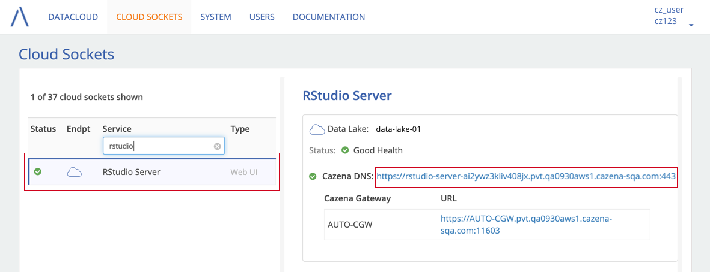
-
In RStudio, open the Connections Pane by selecting the Connections tab, then New Connection.
- Scroll down and select Hive (or Impala) from the options.
Step 2: Add the Hostname and Port to the Connection Pane
- In the Cazena console, on the Cloud Sockets tab, select Hive (or Impala) on the left side of the screen.
- Copy the DNS address and port from the top of of the screen, then paste them into the Connection Pane in RStudio.
- Add
,SSL=1to the connection string, before the final parentheses.
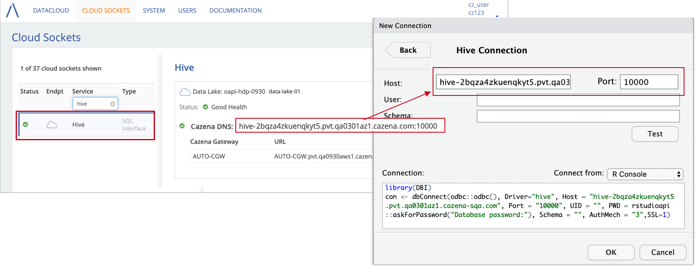
Connect to Hive or Impala via RJDBC using RStudio
In this section, we review how to connect to Hive or Impala via RJDBC. We use Hive in this example; however, you can follow similar steps to connect to Impala.
Location of Hadoop JARs
In order to use Hive with RStudio, you will need to access Hadoop JARs. The JARs are located in the standard install locations that are used by Cloudera:
HADOOP_HOME=/opt/cloudera/parcels/CDH/lib/hadoop
HIVE_HOME=/opt/cloudera/parcels/CDH/lib/hive
Note: Cloudera’s standard install locations are different from the locations used by open source Hadoop (/usr/lib/hadoop/lib/ and /usr/lib/hive/lib/, respectively).
This example shows how you would set up RStudio to connect to Hive via RJDBC.
Step 1: Set up the Hive environment in RStudio
-
Follow the instructions for connecting to the RStudio web interface through your browser.
-
From RStudio, load the RJDBC library.
> library(RJDBC) -
Load the Hive driver.
> hd <- JDBC('org.apache.hive.jdbc.HiveDriver', '/opt/cloudera/parcels/CDH/lib/hive/lib/hive-jdbc.jar') -
Add HADOOP_HOME and HIVE_HOME to the class path.
> for(l in list.files('/opt/cloudera/parcels/CDH/lib/hadoop/')){ .jaddClassPath(paste('/opt/cloudera/parcels/CDH/lib/hadoop/',l,sep=''))} > for(l in list.files('/opt/cloudera/parcels/CDH/lib/hive/lib/')){ .jaddClassPath(paste('/opt/cloudera/parcels/CDH/lib/hive/lib/',l,sep=''))}
Step 2: Get the Hive host address and port from the Cazena console
- On the Cloud Sockets tab, select Hive on the left side of the screen.
-
Under From inside the datacloud, copy the DNS address and port.
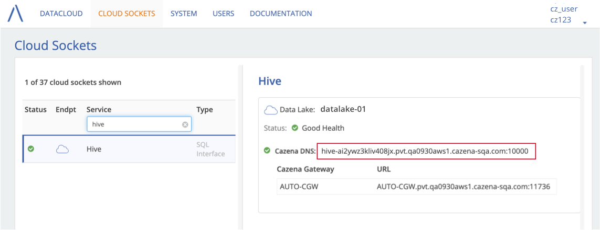
-
Connect to your database using the Hive (or Impala) hostname and port in this command:
jdbc:hive2://<HIVE-HOST>:<HIVE-PORT>/<DATABASE>;ssl=trueFor example:
> c <- dbConnect(hd,'jdbc:hive2://hive-ai2ywz3kliv408jx.pvt.qa0930aws1.cazena-sqa.com:10000/my_database; ssl=true;','my_username', 'my_password')
Connect to Hive using beeline
-
Follow the instructions to find the Hive host address and port from the Cazena console.
-
Copy the host and port into the following string:
!connect jdbc:hive2://<HIVE-HOST>:<HIVE-PORT>/<DATABASE>;ssl=trueFor example:
beeline> !connect jdbc:hive2://hive-ysewsr7iqy8qm6eb.qa0213aws2.pvt.cazena-sqa.com:10000/my_database;ssl=true
Connect to Impala using the Impala Shell
Step 1: Copy the Hostname and Port for Impala
- On the Cloud Sockets tab, select Impala on the left side of the screen.
-
Under From inside the datacloud, copy the DNS address and port.
Step 2: Connect to the Impala Shell
Paste the DNS address and port into the following command:
impala-shell -i <IMPALA-HOST>:<IMPALA-PORT> -–ssl
For example:
impala-shell -i impala.5631b377b0cc20e.pvt.cazena-sqa.com:21050 --ssl
SparkR in RStudio Server
Within a Cazena data lake, you can use SparkR from any R shell, including a Hue notebook or RStudio Server.
Step 1: Connect to RStudio Server Through Your Browser:
Follow the instructions to connect to RStudio through your browser.
Step 2: Run Sample Code
From the RStudio web client or a Hue notebook:
-
Load SparkR and the magrittr library.
library(SparkR) library(magrittr) -
Create a SparkContext
sc <- SparkR::sparkR.init(master = "yarn-client") -
Initialize the SQL context, which loads the required Hive libraries.
hiveContext <- sparkRHive.init(sc) df <- table(hiveContext, 'db1.nycflights')
Use JDBC to connect to SQL Workbench
This example shows how to use SQL Workbench to query a database in a data mart.
- You can download SQL Workbench here.
- You will also need a postgreSQL JDBC driver, which you can download here.
Step 1: Copy the IP Address and Port for MPP SQL
- In the Cazena console: From the Cloud Sockets tab, select MPP SQL on the left side of the screen.
- Under From inside the datacloud, copy the Internal IP:Port address and port.

Step 1: Paste the IP Address and Port into SQL Workbench
- Start SQL Workbench, then select File > Connect Window.
- Select a PostgreSQL JDBC driver (download here)
-
Enter the URL:
jdbc:postgres://IP ADDRESS:PORT/czdatasetwhere:
- IP ADDRESS:PORT comes from the Cloud Sockets tab.
- If you moved data using the Cazena console, use czdataset as the name of the database.
- Ask your system administrator for the username and password.

Note: Data moved to a Cazena data mart goes into a database named czdataset. The schema name matches the name of the dataset used when moving data into the cloud.
Object Store
Depending on the configuration of your environment, data may be stored on Microsoft ADLS or AWS object storage.
ADLS
You may be able to link to two pages in Azure Monitor from the Cazena console.
-
The ADLS Data Explorer allows you to browse through your ADLS directory.
-
The ADLS Metrics Overview displays metrics such as data storage utilization, read/write requests, and ingress/egress.
You may also view ADLS account information including IDs and instance names in the Cazena console.
Link to Azure Monitor from the Cazena console
You must initiate sessions with Azure Monitor by linking from the Cazena console.
-
From the Cloud Sockets tab, select either ADLS Metrics Overview or ADLS Data Explorer on the left side.
-
Links to the Metrics Overview and Data Explorer will appear on the right side of the screen.
-
Sign in to ADLS as the Customer Access User. If you see a message in ADLS that tells you that you don’t have access to the Metrics Overview, check that you are signed in as the Customer Access User, and not into your own Microsoft account.
Note: At the top of the ADLS Metrics Overview, there is a link labeled Data Explorer. The link leads to an inaccessible directory. Use the links provided in the Cazena console to link to the data explorer.
View ADLS IDs and Instance Name
To view variables such as tenant ID, client ID and ADLS Instance name, select the System tab, then ADLS. Links to ADLS Metrics Overview and ADLS Data Explorer are also available on this page.
See the section on Moving Data to ADLS Using WebHDFS for an example of how to use these variables.
AWS S3
From the Cazena console, you may link to the AWS S3 console and view keys and tokens that can be used to access the bucket.
Link to AWS bucket from the Cazena console
To link to the AWS S3 console:
-
From the Cloud Sockets tab, select AWS S3 Console on the left side of the screen.
-
A link to the AWS bucket will appear on the right side. Sessions that you initial from this link will expire after 12 hours.
View AWS Keys and Token
To view the bucket name, AWS access key, secret access key and session token, select the System tab, then S3. The AWS S3 link is also available on this page.
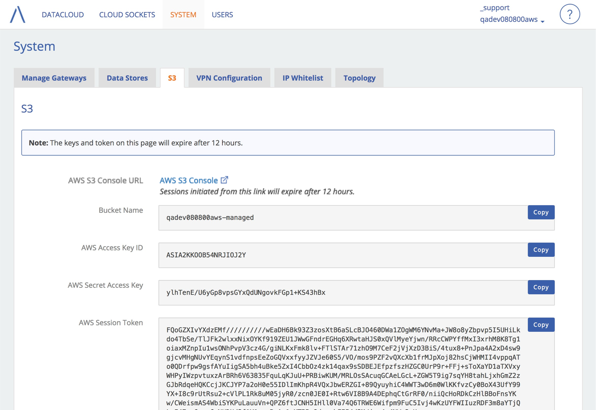
Note: Keys and tokens will expire after 12 hours.
Move Data
The section covers the following types of data movements:
- Move to HDFS using Sqoop
- Move to HDFS using WebHDFS
- Move to ADLS using WebHDFS
- Move Using the Cazena Data Mover
Move to HDFS Using Sqoop
Cazena will install any JDBC drivers that you need to use Sqoop for moving data from the enterprise into the datacloud. At a high level, you’ll follow these steps to move data into the Cazena datacloud using Sqoop:
- Either a system administrator or Cazena support will set up an enterprise cloud socket that contains the information needed to connect to the enterprise resource.
- Use the hostname and port provided by the enterprise cloud socket when you set up a Sqoop job. The example below will show how to use this information in Hue.
Before You Begin
-
You must have an enterprise cloud socket, which contains the information needed to connect to the enterprise resource where the data resides. The cloud socket must be set up by a system administrator or Cazena support.
-
If you are moving data from an Oracle server, the time zone of the data lake must be available to the Oracle database.
Step 1: Get Hostname and Port from the Cazena console
On the Cazena console:
- Select the Cloud Sockets tab. On the left side of the screen, click on the name of the cloud socket you want to use. To search for a particular cloud socket, use your browser’s Find command.
-
The hostname and port will appear on the right side of the screen. Copy the hostname and port.
Step 2: Use Hue to Create Connection Links
Connect to Hue
- On the Cloud Sockets tab, select Hue Server on the left side of the screen
- Click on the link on the right side of the screen to open Hue.
- Sign into Hue using your Cazena credentials.
- From the Hue user interface, open the left menu, then select Browsers > Sqoop.
- Click New Job in the upper right corner.
-
In the next step, you will use the hostname and port to create a link for the From link: field.
Create a link to the enterprise resource
Use the following information when you create the From link: for a Sqoop job.
- For Connector, select
generic-jdbc-connector. - For JDBC Driver Class, enter one of the following:
- Oracle:
oracle.jdbc.OracleDriver - Netezza:
org.netezza.Driver - PostgreSQL:
org.postgresql.Driver
- Oracle:
-
Use Hostname and Port from the enterprise cloud socket (see Step 1) to create a JDBC string. For example, a JDBC string for Netezza might be:
jdbc:netezza://czgw.cazena.internal:11000/marketing-db…where czgw.cazena.internal:11000 is the hostname and port from the enterprise cloud socket.
Troubleshooting connection links
If you are unable to save a JDBC connection link:
-
On the Manage Gateways page, make sure that the enterprise service that you are using is running and has been activated. On the left side of the screen, select Enterprise, then find the service on the right side of the screen. The switch in the Active column should be blue, and the status for the port should be green.
-
From the machine that is running the gateway, run
cgw-show-ipservices. If the service exists, it should show in the results, with the server IP and port that appears on the list of enterprise gateways (see above). -
To check that the link really has been created: In Hue, select Data Browsers > Sqoop Transfer, the click on Manage Links in the upper right corner. See if the link that you tried to create is on the list.
Create a link for HDFS
- From the New Job screen, click Add a New Link to add a second link.
- Give the connector a name.
- For Connector, select hdfs-connector.
- For HDFS URI, enter
hdfs://nameservice:8020 - Click Save.
- Back on the New Job screen, select that link as the To link.
Step 3: Create and Run the Sqoop Job
Step 1 (Hue)
| Select the To and From links (described in the previous step), then click Next. |
Step 2 (Hue)
| For Table name, enter the name of the table you want to import from your database. For Partition Column (optional): Enter the name of the partition column, if applicable. The partition column is often the table’s primary key, but it can also be any column of your choosing. Click Next. |
Step 3 (Hue)
| For Output Format, select TEXT_FILE. For Compression Format, select NONE. For Output directory, enter /user/sqoop2/postgresLeave all other fields blank. Click Save and Run. |
 |
Move to HDFS Using WebHDFS
This example describes how to move a file (nycflights.dsv) into a directory (user/my_username/my_directory) on your Cazena data lake.
Step 1: Get the IP address and Port for WebHDFS
- Select the Cloud Sockets tab. On the left side of the screen, under APIs , select WebHDFS.
- Make a note of the IP address and port that appears on the left side of the page. You might want to copy the information and paste it into a text editor as you assemble the commands in the next steps.
Step 2: Get the HDFS Location Where You Want to Move Data
From a terminal window, run the following command to determine the location in HDFS where the data will go:
curl -i -k -u <USERNAME>:<PASSWORD> -X PUT "http://<IP-ADDRESS>:<PORT>/gateway/cazena/webhdfs/v1/<DIRECTORY>/<FILENAME>?op=CREATE"
Where:
<USERNAME> and <PASSWORD> are your username and password for the Cazena console
<IP-ADDRESS> and <PORT> are the server and port from the Cloud Socket (HDFS-REST-API)
<DIRECTORY> is the path to the HDFS directory.
Note: The full path to the directory will always begin with user/<username> . You can sign into Hue to see your directory structure.
<FILENAME> is the name of the file. You must include the filename, and it must match the name of the source file.
Example: To move the file nycflights.dsv to the directory /user/my_username/my_directory , you would start with a command like this:
curl -i -k -u my_username:mypassword -X PUT "http://1.2.3.4:11979/gateway/cazena/webhdfs/v1/user/my_username/my_directory/nycflights.dsv?op=CREATE”
The system will return several values, including the HDFS location, e.g.,
Location: http://1.2.3.4:11979/gateway/cazena/webhdfs/data/v1/webhdfs/v1/user/my_username/my_directory/nycflights.dsv?_=AAAACAAAABAAAAEAzrO5cJpwRtgS_VvH60NYdTGHgRY5YOcHT7bHdAPh5uADDoHlpHWuA5BkU7D_IwOWGQa7FSBj12Q0vwQ3LmYAx01AICxQ3ZCyY1TD29nHJdhMjSFVcdhDS5POisjHIS8gEeWgIWMdYOP51xi0HDjjO0iddgpnnCDiZ1NYqEZxhpuVtw9Hu_QX3IAYtuN11wP9AGqWccrDI6EiOaWkuoDMV_wiFySp02SGsFC2VpqjVgLxuF7y_TcjTfz_n5V6-ATadpKijxatihot_XGFoNwMUAnV_vMwYqOvYnEt0k6QegqbmTOUXUMpE2ocZ4VlXK13toqQKmDUS_kOFBrrqwaClA0wRpw2K1Tf4jPsOnjGQ_6PTPNtwYaGXg
Step 3: Move Data to HDFS
Use the location from the previous step in the command that will move the data into HDFS:
curl -i -k -u <USERNAME>:<PASSWORD> -X PUT -T <FILENAME> "<LOCATION>"
<USERNAME> and <PASSWORD> are your username and password for the Cazena console
<FILENAME> is the file containing the data that you want to move. This might include the path to the file. The name of the actual file must be the same as the name that you used in the previous step.
<LOCATION> is the location from the previous step
Example: To move the file nycflights.dsv into the location from the previous step, you would use a command like this:
curl -i -k -u my_username:mypassword -X PUT -T nycflights.dsv "http://1.2.3.4:11979/gateway/cazena/webhdfs/data/v1/webhdfs/v1/user/my_username/my_directory/nycflights.dsv?_=AAAACAAAABAAAAEAzrO5cJpwRtgS_VvH60NYdTGHgRY5YOcHT7bHdAPh5uADDoHlpHWuA5BkU7D_IwOWGQa7FSBj12Q0vwQ3LmYAx01AICxQ3ZCyY1TD29nHJdhMjSFVcdhDS5POisjHIS8gEeWgIWMdYOP51xi0HDjjO0iddgpnnCDiZ1NYqEZxhpuVtw9Hu_QX3IAYtuN11wP9AGqWccrDI6EiOaWkuoDMV_wiFySp02SGsFC2VpqjVgLxuF7y_TcjTfz_n5V6-ATadpKijxatihot_XGFoNwMUAnV_vMwYqOvYnEt0k6QegqbmTOUXUMpE2ocZ4VlXK13toqQKmDUS_kOFBrrqwaClA0wRpw2K1Tf4jPsOnjGQ_6PTPNtwYaGXg"
The system response will include:
HTTP/1.1 201 Created
To verify that the data has been moved, you can sign into Hue and navigate to the file.
Move to ADLS Using WebHDFS
If your datacloud runs on Microsoft Azure infrastructure, you may have direct access to a shared folder in the object data store. From the Cazena console, you can view and copy information needed to move data into ADLS using WebHDFS.
ADLS Account Information
When your datacloud is provisioned, Cazena sets up a dedicated Customer Access User that has access to the Azure object data store. When you move data, use the username and password for the Customer Access User (i.e., not your own username and password).
- From the System tab, select ADLS.
- Your account data is displayed at the top of the page, including:
- Tenant ID
- Client ID
- Instance name
- ADLS Base URL (used in commands such as creating tables and databases)
- Customer Access username
About ADLS Customer Access User
On the System > ADLS page, there is a link for changing the password of the Customer Access user. To change the password, you will need to know the existing password, which is initially set by Cazena Support. If you don’t know the password, contact support@cazena.com.
If you are signed in to your own Microsoft account on your browser when you click the Change Password link, you may go to a Microsoft screen for changing your own password, rather than the password for the Customer Access user. To avoid this situation, either sign out of your own Microsoft account, or open the link in an incognito browser window.
ADLS Commands
The Cazena console displays the information needed to move data into ADLS using WebHDFS. Your account data is incorporated into a series of commands that you can use to set environment variables, obtain and refresh access tokens, and access the ADLS object store.
This example will show how to move data from your local file system into the ADLS shared folder.
Step 1: Set Client and Tenant IDs
- In a terminal window, navigate to the directory that contains the data to be moved.
- From the Cazena console, select the System tab, then ADLS.
-
Copy each of the first two commands and paste them into the terminal window. These commands will set the environment variables CLIENT_ID and TENANT_ID.
export CLIENT_ID=685800e4-02d3-4fd4-b6f2-152b16aafe49 export TENANT_ID=2e941617-a05d-4a55-918f-757a04a7be11
Step 2: Set Access and Refresh Tokens
-
To set the CODES environment variable, copy the third command onto your clipboard and paste it into a text editor. Replace ADD-PASSWORD with the password for the Customer Access user.
-
Paste the command containing the password into the terminal window.
export CODES=$(curl -X POST https://login.microsoftonline.com/$TENANT_ID/oauth2/token -F grant_type=password -F resource=https://management.azure.com/ -F client_id=$CLIENT_ID -F username=cz123@cz123.cazena.com -F password=your-password)The system will respond with something like the following:
% Total % Received % Xferd Average Speed Time Time Time Current Dload Upload Total Spent Left Speed 100 3080 100 2434 100 646 6396 1697 --:--:-- --:--:-- --:--:-- 6405 -
To check whether the access code was generated, use
echo $CODES.echo $CODES {"token_type":"Bearer","scope":"user_impersonation","expires_in":"3600","ext_expires_in":"0","expires_on":"1503072287","not_before":"1503068387","resource":"https://management.azure.com/","access_token":"eyJ etc... -
Copy and paste the commands next to Get initial access and refresh tokens. These commands will set the ACCESS_TOKEN and REFRESH_TOKEN variables that will be used in subsequent commands.
export ACCESS_TOKEN=$(echo $CODES | jq .access_token | sed -e "s/\"//g") export REFRESH_TOKEN=$(echo $CODES | jq .refresh_token | sed -e "s/\"//g")
Refresh Access Codes
-
Access codes will expire after 5 minutes. To refresh the access code, use the next command next to Refresh ACCESS_TOKEN.
export ACCESS_TOKEN=$(curl -X POST https://login.microsoftonline.com/$TENANT_ID/oauth2/token -F grant_type=refresh_token -F resource=https://management.core.windows.net/ -F client_id=$CLIENT_ID -F refresh_token=$REFRESH_TOKEN | jq .access_token | sed -e "s/\"//g")
Step 3: Move Data into the ADLS folder
-
The final command on the System > ADLS page will access the ADLS folder.
curl -X GET -H "Authorization: Bearer ${ACCESS_TOKEN}" "https://cz123.azuredatalakestore.net/webhdfs/v1/share?op=LISTSTATUS" | jq
If the folder is empty, the system will respond with something like this:
% Total % Received % Xferd Average Speed Time Time Time Current
Dload Upload Total Spent Left Speed
100 34 100 34 0 0 39 0 --:--:-- --:--:-- --:--:-- 39
{
"FileStatuses": {
"FileStatus": []
}
}
-
Set a variable with the name of the file, for example:
export FILE_TO_USE=nycflights.dsv -
Use a command such as the following to move the file:
curl -i -X PUT -L -T $FILE_TO_USE -H "Authorization: Bearer ${ACCESS_TOKEN}" "https://cz123.azuredatalakestore.net/webhdfs/v1/share/${FILE_TO_USE}?op=CREATE" -
After the movement is complete, you can re-use the command to access the ADLS folder to see the data that you moved:
curl -X GET -H "Authorization: Bearer ${ACCESS_TOKEN}" "https://cz123.azuredatalakestore.net/webhdfs/v1/share?op=LISTSTATUS" | jq
% Total % Received % Xferd Average Speed Time Time Time Current
Dload Upload Total Spent Left Speed
100 305 100 305 0 0 457 0 --:--:-- --:--:-- --:--:-- 457
{
"FileStatuses": {
"FileStatus": [
{
"length": 1591,
"pathSuffix": "dmm.log.snippet",
"type": "FILE",
"blockSize": 268435456,
"accessTime": 1503061325322,
"modificationTime": 1503061325528,
"replication": 1,
"permission": "770",
"owner": "7b8783fe-e118-4632-91c4-3049cb85e28a",
"group": "bae379d5-e7f6-4c9f-aa89-37d9f71a7744"
}
]
}
}
Alternately, you could use the ADLS Data Explorer to see the file that you moved.
Move Using the Cazena Data Mover
From the Cazena console, you can initiate the following types of data movements:
- Move data from a Netezza or Oracle server located within your enterprise
- Import or export data to/from a FTP or SFTP server. FTP/SFTP servers can be located either inside your enterprise or on the public internet.
- Import data from your local file system
- Move data from other types of data sources, using a custom data adapter.
- Move data from one Cazena service into another.
- After a data movement has successfully completed via the Cazena console, you can generate a script that will allow you to easily repeat the transfer outside of the Cazena console. For more information, see the section on Scripting Transfers.
From a Netezza or Oracle Server
Before You Begin
You must have a data store configured that contains the information needed to connect to the Netezza or Oracle server.
Step 1: Select Source and Destination
- From the Datacloud tab, click the Move Data button.
- On the dialog that appears: Under Select Source, select Data Store, then select the data store for the server that contains your source data. If you do not see the data store that you need, check that it has been set up.
- Under Select Destination, select Cazena Service, then select the data lake/data mart and dataset where your data should go.
- To create a new dataset, select New.
- Click Continue.
Note: Currently the database used for all objects created in an MPP SQL service called czdataset. The dataset name you enter here will become the schema name in the czdataset database in the MPP SQL service.

Step 2: Select Tables from the Source (Netezza or Oracle) Database
Next, you will search for and select tables from your source database. When moving from Netezza or Oracle, you can select several tables at once.
About Data Conversion
When moving data, the Cazena dataset manager attempts to map column names, datatypes and keys from the source database to the target Cazena workload engine. For example, if a source Netezza database has a distribution column, the system will make the same distribution column if the target is a MPP SQL-based workload engine. For more details, see the section on Data Movement Details.
As you select tables to move from your source database, you may choose whether or not you want to review the mappings.
- If you Review a table, you can view and edit mappings of datatypes, column names and keys.
- If you Finalize a table, you accept the proposed mappings without reviewing them.
To help you decide, Cazena will flag tables that appear to have conversion issues.
To select tables from your source database:
- Enter a text string to search for tables whose names contain the string, then click Search.
- From the search results, select tables that you want to move:
- Use the checkboxes to select multiple tables to either Review or Finalize.
- You may also select Review or Finalize for individual tables using the dropdown menu in the Action column.
The three columns on the right indicate whether there are conversion issue. For more information, hover over the numbers in the three columns on the right.
Your selection (Review or Finalize) for each table will appear in the Actions column. The total number of selections will also appear in the Your Selection box on the right side of the screen.
- Click Continue.

Step 3: Review and Finalize Table Definitions
Next, review the table definitions for tables that you have selected for review. Table definitions consist of:
- Table names
- Column names
- Datatypes
- Keys (optional; MPP SQL only)
The Review page lists all of the tables that you have selected.
- Tables that you have selected for review are listed in the left column.
- The table currently under review appears in the middle of the page.
- Tables that are ready to be finalized appear in the right column. If you are following the example, the two tables that you elected to finalize without review will appear here.
Note: You may skip this page altogether if, on the previous page, you chose to finalize all selected tables without reviewing them.

Review the table definition:
- Review the table name, column names and datatype conversions for each page.
- If your table supports keys, select the Keys tab to review or add keys to your table definition.
-
To accept the table definition for the table under review, click Approve.

- After you have reviewed all table definitions, click Finalize Tables on the right side of the screen. This will move all of your approved table definitions to the datacloud.

Step 4: Move Data (Optional)
After you finalize tables, the table definition will be moved to the destination service. At this point, no data will have been moved to those tables. This allows you to schedule and run a data movement at a different time.
If you like, you can move data on the next page.
- To specify a WHERE clause for a table, click Add a Filter.
- To move the first 100 rows of data, select the checkbox in the Move a Sample column.
To move data, click Move Tables.

You can also generate a script for recurring transfers. For more information, see the section on generating scripts for recurring data movements.
If you want to check on the progress of your data movement, see the section on data movement progress.
From FTP/SFTP Servers
You may import data from an FTP or SFTP server that is located either within the enterprise, or on the internet.
Before You Begin
- You must have a data store configured that contains the information needed to connect to the FTP/SFTP server.
- Data that you import from an FTP or SFTP server must be in the DSV (Delimeter Separated Values) format. For details about DSV format rules, see the section that describes Delimiter Separated Values (DSV) Files .
Step 1: Select Source and Destination
- From the Datacloud tab, click the Move Data button.
- Under Source, select Data Store, then the data store where the source data is located.
- Under Destination, select Cazena Service, then select the data lake or data mart and dataset where you want to import data.
- Click Continue.

Step 2: Search for Files on the FTP/SFTP Server
Note: Files to be imported must be in DSV format in order to be imported into a cloud service. For details about DSV format rules, see: Supported Format for Delimiter Separated Values (DSV) Files .
- In the search box, enter a regular expression to search for files on the FTP/SFTP server.
- Review your search results. Cazena will use the first file in the results to create a table definition. If you need to, you can enter a different regular expression to revise your search results.
- Click Create Table Definition.

Step 3: Review Table Definition
- Select the delimiters (e.g., comma, tab, etc) and whether the file has a header row.
- Click OK. A list of columns in the file will appear.
- To reload the file with different parameters (e.g., delimiters), make changes and then click OK again.
- Give the table a name and review the table definition (column names and datatypes).
- Click Finalize to move the table definition to the cloud.

Step 4: Move Data (Optional)
Finalizing the file will move the table definition to the cloud. On the next screen, you may select files to move into the table that you have created.

If you want to check on the progress of your data movement, see the section on data movement progress.
From Your Local File System
Data that you import from your local file system server must be in the DSV (Delimeter Separated Values) format. For details about DSV format rules, see the section that describes Delimiter Separated Values (DSV) Files.
Step 1: Identify Source and Destination
- From the Datacloud tab, click the Move Data button.
- Under Source, select Local File System.
- Under Destination, first select Cazena Service, then select the data lake/data mart and dataset that you want. If you want to create a new dataset, select New.
- Click Continue.

Note: The database used for all objects created in an MPP SQL service is czdataset. The dataset name you enter here will become the schema name in the czdataset database in the MPP SQL service.
Step 2: Upload Data From Your Local File System
On the next screen, select the file that you want to upload.

After the file is uploaded, the parameters for the file will appear.
- Select the delimiters (e.g., comma, tab, etc) and whether the file has a header row.
- Click OK. A list of columns in the file will appear.
- To reload the file with different parameters (e.g., delimiters), make changes and then click OK again.

Step 3: Review Datatypes and Column Names
Column names will be take from the header row in the source file, if you selected that option. Datatypes are assigned based on a sampling of the data. Where applicable, precision or length will also appear in the Datatype column.
Review the table definition:
- Give the table a name.
- Click on any column name to change it.
- Review datatypes, precisions and lengths and make any changes that you desire.

Step 4: Move Data (Optional)
After you have finalized the table definition, the table schema will be created in the destination data mart or data lake. No actual data will be loaded into the table at this point. This allows you to schedule and run data movements at a different time. For more information, see the section on scripting transfers.
In order to actually load data into the table, click Move Files.

If you want to check on the progress of your data movement, see the section on data movement progress.
Custom Data Adapters
You may use a custom data adapter to import data from sources other than Netezza, Oracle, FTP/SFTP or local files. At a high level, custom data adapters work like this:
- You or Cazena Support can write a program that will be installed on the Cazena gateway. The program must:
- Connect to the desired data source.
- Transform source data into DSV-compatible format (if not already DSV-compatible), and then output it to
stdout. Cazena will capturestdoutand move it to the datacloud. - Additional requirements for the program are described in more detail below.
-
On the Cazena console, you then create a data store using the path to the program and any arguments that the program needs.
- In the console, you will then follow steps that are similar to moving data from FTP/SFTP, using the data store that references your program and its arguments. You will be able to to review column and table names, set datatypes, etc in the console.
Sample Code
There is a directory of sample custom adapters available on the Cazena gateway, in the directory /home/cazena/custom-adapters. Each adapter has a README file that describes the requirements for using that adapter.
If you use the sample adapters, be sure that you copy them into a different directory. If the Cazena gateway is updated, new samples may overwrite the samples in /home/cazena/custom-adapters.
Example: Move a File From an AWS Bucket to the Datacloud
- The program s3_adapter.py is a simple Python program that moves a file, bankemps.dsv, from an AWS S3 bucket onto the datacloud.
- s3_adapter.ini contains arguments that are used in the program. Add your own credentials, etc to this file as described in the comments in that file.
- If the programs are not already on a Cazena gateway, copy them onto a Cazena gateway.
- Make sure that the files’ permissions allow them to be read and executed, e.g.,
chmod 755 <filename>. - Test the program by running it in the command line from the Cazena gateway. Be sure to test the four commands that are described in the next section.
-
Set up a data store that contains the path to s3_adapter.py and s3_adapter.ini.

- Follow the steps for moving data using the Cazena console.
Program Requirements
Your program must meet these requirements:
- The program must return 0 on success.
- The program must return 1 on failure.
- The program will be run with arguments and one of four options. As you test your program in the command line, make sure that it supports the following commands:
<your program> -pgm_args "<text from data store>" -version (see example)
<your program> -pgm_args "<text from data store>" -list (see example)
<your program> -pgm_args "<text from data store>" -move <entity> (see example)
<your program> -pgm_args "<text from data store>" -move <entity> -rows <number> (see example)
Arguments
The text in the Arguments field of the data store will be passed in to your program via the -pgm_args option. You can use any type of argument that you want, including a file name (such as the sample code)or a list of options, such as -text1 -text2
Note: All text in the Arguments field will be wrapped in double-quotes when your program is run. Don’t put double-quotes in this field unless your program needs them around your argument string.
Options
Your program must support four options: -version, -list, -move <entity>, and -rows <max_number>
-version
This option outputs the API version that your program is using. Cazena will run this command to check for possible incompatibilities.
- The version must be equal to or less than the current API version.
- The format must be
<major>.<minor>, e.g.,1.0. - As the time of writing this documentation, the API version is 1.0.
Example:
Running your program with the -version option might look something like this:
$ python s3_adapter.py -pgm_args "~/s3_adapter.ini" -version
1.0
-list
This option must list all files/entities that the data adapter knows about. Cazena will run this option to test which entities are available.
The list must output the following information for each entity/file, with commas separating fields:
<entity 1 name>, <size in bytes>, <last modified time in milliseconds since Epoch>
<entity 2 name>, <size in bytes>, <last modified time in milliseconds since Epoch>
<entity 3 name>, <size in bytes>, <last modified time in milliseconds since Epoch>
Cazena will read the standard output, assuming newlines at the end of each line, and stopping at EOF.
Example
Running your program from the command line with the -list option from the command line might look something like this:
$ python s3_adapter.py -pgm_args "~/s3_adapter.ini" -list
bankemps.dsv, 464, 1472607957
bankempsMore.dsv, 530, 1473444917
nycflights.dsv, 343491, 1473444917
titanic_training_data.dsv, 60316, 1473444918
-move <entity>
This option will start a data movement of the entity that comes from the -list output.
- When you run your program with this option from the command line, it should output data that you want to move into
stdout. - Data that your program outputs must be compatible with DSV format.
- A value for
<entity>must be provided; no default value is assumed.
Example
Running your program from the command line with the -move <entity> option might look something like this:
$ python s3_adapter.py -pgm_args "~/s3_adapter.ini" -move bankemps.dsv
1, Jones, Tom, 020345678, 1/1/1990, Branch Manager
2, Smith, Harry, 254567891, 1/1/1992, Teller
3, White, Ted, 254567896, 1/1/1994, Teller
4, Gray, George, 254567901, 1/1/1996, Teller
5, Taylor, Mary, 254567906, 1/1/1998, Assistant Branch Manager
6, Evans, Bob, 254567911, 1/1/1980, Vice President
7, Doe, John, 254567916, 1/1/1981, Marketing Specialist
8, Doe, Jane, 254567921, 1/1/1982, Portfolio Manager
9, Hardy, Helen, 254567926, 1/1/1983, Branch Manager
10, Johnson, Leo, 254567931, 1/1/1984, Branch Manager
-rows <max_number>
This option is used in combination with -move <entity> to specify the maximum number of rows to extract. If no value is provided, all rows will be moved.
Example
$ python s3_adapter.py -pgm_args "~/s3_adapter.ini" -move bankemps.dsv -rows 2
1, Jones, Tom, 020345678, 1/1/1990, Branch Manager
2, Smith, Harry, 254567891, 1/1/1992, Teller
Other Assumptions
- If the user stops the movement, a SIGTERM will be sent to the program.
Using the custom data adapter from the Cazena console
Before you begin
- Copy program files to the machine that is running the Cazena gateway.
- If your program assumes the existence of certain packages, libraries, etc in the environment, make sure that they are available on the machine that runs the Cazena gateway.
- Make sure that the files’ permissions allow them to be read and executed, e.g.,
chmod 755 <filename>. - Set up a data store that references the path to the file and any arguments.
Step 1: Select Source and Destination
- From the Datacloud tab, click on the data lake or data mart where you want to move data.
- Click Move Data.
- Under Source, select Data Store, then the data store that refers to your program and arguments.
- Under Destination, select Cazena Service, then select the service and dataset where you want to import data.
- Click Continue.

Step 2: Search for Entities
- In the search box, enter a regular expression to search for names of entities that you want to move.
- Review your search results. Cazena will use the first item in the results to create a table definition. If you need to, you can enter a different regular expression to revise your search results.
- Click Create Table Definition.

Step 3: Review Table Definition
- Select the delimiters (e.g., comma, tab, etc) and whether the file has a header row.
- Click Apply Changes. A list of columns in the file will appear.
- To reload the file with different parameters (e.g., delimiters), make changes and then click Apply Changes again.
- Give the table a name and review the table definition (column names and datatypes).
- Click Finalize to move the table definition to the cloud.

Step 4: Move Data (optional)
Finalizing the file will move the table definition to the cloud. On the next screen, you may select files to move into the table that you have created.

If you want to check on the progress of your data movement, see the section on data movement progress.
Move Additional Data into a Table
From the Cazena Console
From the Cazena console, you can append or replace data in a table.
- Navigate to the table where you want to move additional data.
- Click Move More Data…
- The dialog that opens will depend on how the original table was set up.
- If you set up the original table with a local file, the dialog will let you upload an additional file. It is assumed that the new file has the same table definition as the original table.
- If you moved data from server, the dialog will be prepopulated with the information needed to connect to that server.
- Select whether you want to append to existing data (INSERT) or replace data (DELETE ALL followed by INSERT).

Transfer Scripts
If you moved data from a server or a Cazena service, you can generate a script for recurring transfers.
- A script enables you to monitor data movement activities as well as initiate them.
- Scripts can be run on a scheduled basis. For example, they can be integrated into your enterprise process scheduler.
The script will also allow you to check the status of data movement activity.
API scripts are available for any type of data movement that leverages a Cazena service, except for data movements from the local file system.
To Generate an API Script:
- From the Datacloud tab, click on the name of the data lake or data mart that was the source or destination for the desired movement.
- Click the Transfers tab. A list of transfers will appear on the left side of the screen.
- You may use the search field to filter the list of transfers, e.g., to find a transfer that moved data into a particular table.
- Select the transfer that you want to replicate, then select a gateway on the right side of the screen.
- Click Get API.

To use the script:
- Copy the script to a machine that has connectivity to a Cazena gateway.
- Check that the machine that runs the script has the ‘curl’ utility installed on it. Note that curl is standard on most operating systems.
- Change the permissions on the script file to be executable.
During a terminal session:
- Use the
--helpargument to get help (e.g.,my_script.sh --help)
$ ./nz_bankdemoTransfer.sh --help
--new {operation} : To create a new job. Valid operations: append, replace
--status {id} : View the stats of job with a given id
--stop {id} : Stop the job with the given id permanently
--test : Tests the connection to the console
--help : View this message
- To append data to the table(s), use the
--new appendargument. This will initiate a new data movement job that will append data to the service table(s) using the same configuration as the original data movement.
$ ./nz_bankdemoTransfer.sh --new append
% Total % Received % Xferd Average Speed Time Time Time Current
a Dload Upload Total Spent Left Speed
100 1032 0 1009 100 23 573 13 0:00:01 0:00:01 --:--:-- 572
Successfully started job with id: 12
- To replace data in the table(s), use the
--new replaceargument.
$ ./nz_bankdemoTransfer.sh --new replace
% Total % Received % Xferd Average Speed Time Time Time Current
Dload Upload Total Spent Left Speed
100 1034 0 1010 100 24 450 10 0:00:02 0:00:02 --:--:-- 450
Successfully started job with id: 14
- To check the status of the job, use the argument use the argument
--statuswith theIDthat appears next to the message:Successfully started job with id:, such as12above. The complete argument would be--status 12
$ ./nz_bankdemoTransfer.sh --status 12
% Total % Received % Xferd Average Speed Time Time Time Current Dload Upload
Total Spent Left Speed
100 1020 0 1020 0 0 17591 0 --:--:-- --:--:-- --:--:-- 17894
in progress
Export Data from the Cloud
Step 1: Select Source and Destination
- From the Datacloud tab, click on the data lake or data mart where you want to move data.
- Click Move Data.
- Under Source, select Cazena Service, then select the service and dataset from which you want to export data.
- Under Destination, select Data Store, then the data store for the FTP/SFTP server that you want. This
- Click Continue.

Note: If you do not see the FTP/SFTP server that you want, be sure that your system administrator has configured a data store that contains the information needed to sign into the server.
Step 2: Select Tables To Be Exported
On the next page, you will see a list of tables that can be exported.
- Select the tables that you want to export (e.g., customers and employees).
- Click Move Tables.

If you want to check on the progress of your data movement, see the section on data movement progress.
Cazena Gateways
Overview
There are two ways to securely connect to the Cazena service. Both methods allows Cazena customers to access the private cloud sockets in the Cazena service within their private corporate networks.
Site-to-Site
A site-to-site connection establishes an IPSec connection between your enterprise and the Cazena service.
Cazena supports BGP, which allows HA connections to the Cazena Service. The Cazena service will be provisioned in a CIDR range, which will be confirmed to not overlap with any existing CIDRs used for the enterprise network. This configuration allows full access to services exposed by the Cazena service. A subset of services are only available with site-to site configurations, including:
- Kafka
- Cazena Internal DNS
After the site-to-site connection has been established, a DNS forwarding rule must be added to your enterprise DNS to allow resolution of Cazena FQDNs.
Cazena support will provide you with the correct rule sets, depending on whether you have a routing or policy-based firewall. If your enterprise does not support BGP, Cazena can support static routes. However, this will prevent a HA connection, resulting in longer outages during maintenance periods.
Cazena Gateway
The Cazena Gateway is a software device that is packaged as a OVA, which is typically deployed within your DMZ. It manages secure connections between the datacloud and on-premises environments, allowing access to cloud sockets via a port forwarding mechanism.
This is a simpler networking configuration than site-to-site connections, and requires minimal networking configuration within the enterprise. There are a few Cazena services that are not available with this connection, including Kafka and Cazena Internal DNS. This is a simpler networking configuration than site-to-site connections, and requires minimal networking configuration within the enterprise. There are a few Cazena services that are not available with this connection, including Kafka and Cazena Internal DNS.
Cazena Gateways that use the port forwarding configuration can be managed using the Cazena console. The rest of this section describes the following:
- Install a new Cazena gateway
- Create custom cloud sockets
- Activate and update ports
- Troubleshooting
- Stop and delete a Cazena gateway
Install a New Cazena Gateway
If your site is using Cazena gateways configured with port forwarding, you can install a new Cazena gateway. You will download an OVA file and then install it on a virtual machine in the enterprise data center.
Requirements
VMWare
Currently the OVA is supported on VMware systems.
- VMware Fusion/Player 4.0 or later
- Workstation 8.0 or later
- vSphere/ESXi 5.0 to 6.0. VMware vSphere/ESXi 6.5 has deprecated its support for OVAs. If you use vSphere/ESXi 6.5, you will have to manually untar the file. Instructions are in the next section.
Hardware
- 4 virtual CPU cores
- 2.0 GB free memory (4.0 GB recommended)
- 25 GB free disk space
Connectivity
- JDBC/IP connectivity to enterprise database servers
- Outbound Internet connectivity on ports TCP 443 (TLS/SSL), UDP 500 (ISAKMP/IKE), UDP 4500 (IPsec NAT-T), UDP 123 (NTP)
To install a Cazena gateway:
The steps for installing a Cazena gateway are described in detail in the following sections.
- Download and import the Cazena gateway .ova file.
- Install the Cazena gateway.
- Run
cgw-auto-startto connect the gateway to your datacloud. - Create an A record in the enterprise DNS
Step 1: Download and Import the Cazena Gateway .ova file
- Sign into the Cazena support site at support.cazena.com
- Under Cazena Support, click on Downloads.
- Click on the Cazena Gateway link to download the .ova file.
If you are using vSphere/ESXi 6.5
VMware vSphere/ESXi 6.5 and later has deprecated its support for OVAs. Untar the OVA file to extract the OVF and VMDK files. You will not need the MF file.
$ tar -xvf "CazenaGateway.ova"
x CazenaGateway.ovf
x CazenaGateway.mf
x CazenaGateway-disk1.vmdk
-
Import the CazenaGateway.ova file.
Client Instructions VMWare Fusion - Choose File > Import...
- Select the CGW OVA file.
Virtual Machine Manager - Choose Add > Import...
- Select the CGW OVA file.
vSphere/ESXi Web client - Choose Navigator -> Virtual Machines -> Create/Register VM...
- Select Deploy a virtual machine from an OVF or OVA file
- Enter a name
- Select file(s)
- 5.0 to 6.0: Add the OVA
- 6.5 or later: Add the OVF and VMDK files
(See instructions for untarring the OVA file.)
Important: After the import has finished, open the VM’s network settings and make sure the network adapter is set to ‘bridged mode’. This will allow the CGW ethernet primary interface (eth0) to have an enterprise reachable IP address, so that it will be exposed to enterprise users.
Step 2: Install the Cazena Gateway Certificate
- Start the Cazena VM and sign into the gateway:
- username:
cazena - password:
cazena
- username:
-
Copy the Client Authentication Certificate that was emailed to you to the Cazena gateway.
- Option 1: Use
scpas in this example:$ scp cazena.pem cazena@u.v.w.x:~ - Option 2: Copy and paste the contents of the
cazena.pemfile into a new file on the Cazena gateway
- Option 1: Use
-
Install the certificate.
$ cgw-install-cert cazena.pem
Step 3: Run cgw-auto-start to Connect the Cazena Gateway to Your Datacloud
-
From a terminal window, use the IP address of the VM to connect to the Cazena gateway.
Example:
$ ssh cazena@w.x.y.z -
Change the gateway’s default password.
$ sudo passwd -
If you haven’t already, set up a dedicated user account with system administrator privileges for the Cazena gateway. (See Instructions for setting up a user account.)
cgw-auto-start -t ipsec-crt -s security-gateway-dns-name -u cgw-user-username -p cgw-user-password -n cgw-name -k client-certificate-password -w
where:
-
security-gateway-dns-nameis the DNS name of the security gateway, available in email from Cazena support or in the Cazena console. -
cgw-user-usernameandcgw-user-passwordare the username and password of the dedicated gateway user. This may have been emailed to you by Cazena support. -
cgw-nameis a unique name for the Cazena gateway. The name may containA-Z,a-z,0-9and-. -
client-certificate-passwordis the certificate password that was emailed to you.
Example
cgw-auto-start -t ipsec-crt -s portal.partner.cazena.com -u cazenauser -p password -n mygateway -k clientpassword -w
The system will respond:
Starting up CGW auto restart
run cgw-auto-show or look in /var/log/cazena/cgw-auto.log to determine status
Inside of /var/log/cazena/cgw-auto.log, there are three lines giving the network address information, similar to this:
- PDC network: 10.128.80.0/21
- ENT address: 10.4.132.10
- ENT network: 10.4.132.0/24 10.4.133.0/24 10.4.130.0/23
For PDC DNS, the IP address of the IPA server is found in the file /etc/resolv.conf, similar to this:
- nameserver 10.128.80.48 # by strongswan
Use cgw-auto-show to see the status:
$ cgw-auto-show
Tunnel is up
CGW DMC is up
CGW DMC version matches PDC version
Step 4: Create an A Record in the Enterprise DNS
When the Cazena Gateway is installed, onsite administrators will assign a private IP address to the VM. Because all Cazena endpoints are TLS-enabled, accessing cloud sockets with the IP address will result in security errors. For this reason, all access must use a FQDN that matches the public certificate used for your single-tenant deployment. You must add an A record to your enterprise DNS, to allow the enterprise to refer to the Cazena gateway using an FQDN rather than the IP address.
The A record is a DNS entry of the form:
gateway-name.pvt.customer-hash.cazena.com
where
gateway-nameis the name of your Cazena gateway, as specified incgw-auto-startcustomer-hashis the name of your PDC.
Note: This A record will not prevent you from reaching www.cazena.com. The A record is for the subzone [gateway-name].pvt.[customer-hash].cazena.com.
Custom Cloud Sockets
You can set up cloud sockets with endpoints in any of these components:
-
Data Lake or Data Mart: This type of custom cloud socket could be used, for example, to allow access to a tool such as Flume through a second Cazena gateway port.
-
Enterprise: An enterprise cloud socket could be used, for example, to move data from an enterprise server into the datacloud using Sqoop.
-
AppCloud: The AppCloud allows you to deploy any tool (e.g., analytics, machine learning, or proprietary algorithms), with secure access to data in the cloud. An example use would be to install Streamsets on an App Cloud node, and then create a custom cloud socket that allows access to that endpoint.
Example: Enterprise Cloud Socket
This examples shows how to set up a custom Enterprise cloud socket, which might be used to move data from an enterprise server into the datacloud using Sqoop. Instructions for using Sqoop can be found in the Data Movement section.
- On System > Manage Gateways , select Enterprise on the left side of the screen. If there are multiple Cazena Gateways, make your selection under the gateway that you want to use.
- Click New Cloud Socket.
- Enter a name and (optional) description for the cloud socket.
- Select the the port number and protocol that you want to use for the Cazena Gateway. You may use the same port number with different protocols. For example, you could have two cloud sockets that both use port 11300, with one over TCP and one over UDP.
- In the Endpoint section, enter the IP address and port for the enterprise server.
- Optional: You may enter an additional path to the location on the enterprise server.
- Click Save.
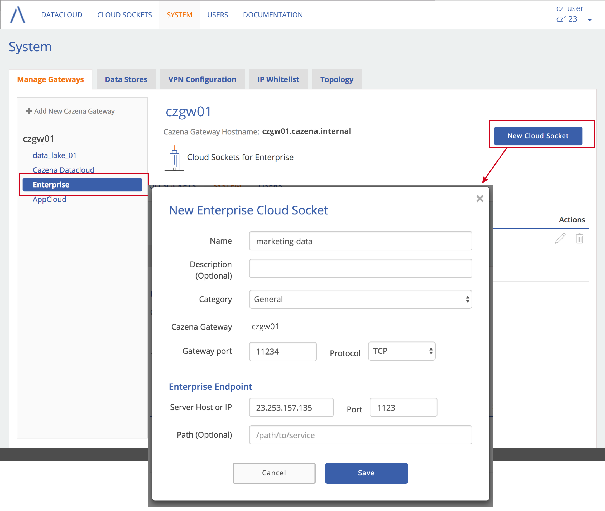
Activate and Update Ports
From the Cazena console, system administrators may specify the ports in the environment that will be used for each service on Cazena gateway(s).
To manage ports, click on the System tab. By default, you will see a list Cazena gateways on the left side of the screen. Under each gateway, you will see each of your data lakes and/or data marts, as well as an option to view enterprise services associated with that gateway.
- Under any Cazena gateway in the list, click on the name of a data lake or data mart, or Enterprise Services.
-
Click on any port number on the right to change its default value.
Note: Port numbers must be in the range 32768 - 60999.
- Use the slider in the Active column to activate or deactivate any port.
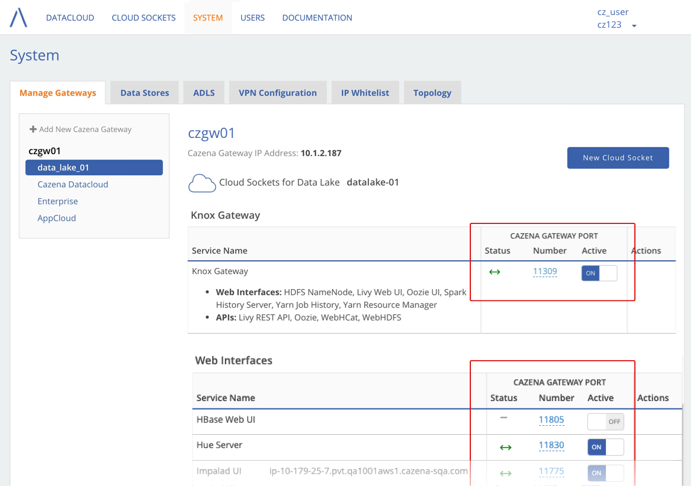
Troubleshooting
Follow these steps if you have run cgw-auto-start and either:
- The Cazena gateway doesn’t appear in the Cazena console.
- You are having trouble moving data.
Check that the Cazena Gateway is Operating Correctly
First, run cgw-auto-show:
$ cgw-auto-show
--Status--
Tunnel is up
Tunnel was started at Mon Jun 11 10:20:40 UTC 2018
Tunnel has been up for 7h:0m:42s
CGW DMC is up
CGW DMC version matches PDC version
CGW was started at Mon Jun 11 10:20:41 UTC 2018
CGW has been up for 7h:0m:41s
--Configuration--
Tunnel type is ipsec
Server is cazena-cz123.eastus2.cloudapp.azure.com
User is cz_user
CGW name is cazena-gw1
Depending on what cgw-auto-show returns, refer to one of these sections:
- Tunnel is down
- CGW DMC is down
- Both the tunnel and CGW DMC are up, but you are having trouble moving data.
If the Tunnel is Down
-
Double-check your cgw-auto-start command.
- Make sure that you are using the correct user name/password.
- Check that the name/password are not being used by someone else.
- Make sure that the secgw name and preshared key (if used) are correct.
If necessary, re-run cgw-auto-start.
-
Check with Cazena support to see if your site has a whitelist of allowed IP addresses. If so, the IP address of the Cazena gateway must be included in the whitelist.
-
Run
cgw-show-ipsec.If the tunnel is up, you should see:
$ cgw-show-ipsec Redirecting to /bin/systemctl status strongswan.service ipsec daemon running Security Associations (2 up, 0 connecting): dm-psk[9]: ESTABLISHED 4 minutes ago, 10.1.3.80[dm-user]...40.70.186.53[rw-psk] dm-psk{24}: INSTALLED, TUNNEL, reqid 1, ESP in UDP SPIs: c111a8c9_i c1b8fff2_o dm-psk{24}: 10.255.252.2/32 === 10.128.8.0/21 dm-psk[8]: ESTABLISHED 50 minutes ago, 10.1.3.80[dm-user]...40.70.186.53[rw-psk] dm-psk{22}: INSTALLED, TUNNEL, reqid 1, ESP in UDP SPIs: c0b0c6ba_i caa3ea03_o dm-psk{22}: 10.255.252.2/32 === 10.128.8.0/21
If CGW DMC is Down
If cgw-auto-show indicates that the tunnel is up but the CGW DMC is down:
-
Check the log files. Open
/var/log/cazena/<gateway-name>.log, replacing<gateway-name>with the name of your gateway.- If you see
Operation timed out after - The CGW DMC software may not have not downloaded successfully. Try increasing the timeout value using the
-moption of the cgw-auto-start command. - If you see WARN or ERROR messages:
- This indicates that CGW DMC is having internal issues. The range of potential issues here are too numerous to list out. Contact support/engineering for help.
- If you see
-
Check that the CGW has the necessary port connectivity by running
cgw-reachable.$ cgw-reachable [DNS-NAME] Checking cloud services reachability... Security Gateway TLS reachable: TRUE AWS S3 reachable: TRUE Azure storage reachable: TRUEIf any of these targets returns FALSE, confirm that the customer firewall is allowing the following ports outbound access from the Cazena gateway.
- TCP 443 (TLS/SSL)
- UDP 500 (ISAKMP/IKE)
- UDP 4500 (IPsec NAT-T)
Trouble with data movement
If you are having trouble moving data, first follow the steps in the previous section to ensure that the Cazena Gateway is operating correctly. Next, you can:
- Check connectivity between the gateway and the datacloud
- Check connections to enterprise services
- Measure latency and throughput
Check Connectivity Between the Cazena Gateway and the Datacloud
-
Run
cgw-show-ipservicesto see whether the CGW is allowing access to the required ports/services within the PDC; for example:[cazena@cgw ~]$ cgw-show-ipservices IpService ID: pdc-kibana (PDC-DNAT rule #4, PDC-FWRD rule #4) target prot opt source destination DNAT tcp -- 0.0.0.0/0 10.4.131.136 tcp dpt:11494 /* id: pdc-kibana, name: kibana */ to:10.128.16.37:5601 ACCEPT all -- 0.0.0.0/0 0.0.0.0/0 ctstate NEW,ESTABLISHED ctproto 6 ctorigdst 10.4.131.136 ctorigdstport 11494 /* id: pdc-kibana, name: kibana */ etc
You can also look on the System tab of the Cazena Console to see whether Cazena gateway ports are active.
Check Connections to Enterprise Services
For Netezza or Oracle:
- Make sure that the needed drivers are present in /home/cazena and are read/executable.
- Netezza: nzjdbc3-7.2.0.0-cazena.jar
- Oracle: ojdbc7-12.1.0.1.0-linux.x64.jar
For Netezza, Oracle or FTP/SFTP:
- Make sure the servers can be reached.
- If you do not have nmap, install it using
sudo yum install nmap. - The following commands should show that the ports are open:
- Netezza:
nmap -p 5480 <NZ IP Address> -Pn - Oracle:
nmap -p 1521<Oracle IP Address> –Pn - FTP:
nmap -p 21 <FTP Server IP> –Pn - SFTP:
nmap -p 22 <SFTP Server IP> –Pn
- Netezza:
- If you do not have nmap, install it using
- Check that the data store contains a valid username and password that can access the database/schema/directory.
Measure Latency and Throughput
If the tunnel and DMC are both up and the IP service connectivity is correct, then there could be an issue with latency or throughput performance. You can use cgw-speed-test.py to test both latency and throughput.
Before You Begin
Connect to the Cazena gateway and get the DNS name for the security gateway.
-
From a terminal window, use the IP address of the VM to connect to the Cazena gateway.
Example:
$ ssh cazena@w.x.y.z -
Run
cgw-auto-showto see the DNS name for your security gateway. The server name is in the section titled Configuration.--Configuration-- Tunnel type is ipsec Server is cz123.eastus2.cloudapp.azure.com User is dm-user CGW name is AUTO-CGW
CLI Arguments
The command line arguments for cgw-speed-test.py can be displayed by using the -h option:
$ scripts/cgw-speed-test.py -h
cgw-test-speed.py -s <secgw name> -c <aws, azure> -l -d -t <duration>
-s secgw name used for VPN connection
-c cloud type (aws/azure)
-l latency tests
-d download tests
-t maximum time to run each test in seconds
-s Required. Specify the DNS name or the IP address of the PDC’s security gateway.
-c Optional; default is both platforms. Specify the cloud platform, either azure or aws.
-l Optional. Run the latency tests.
-d Optional. Run the download tests.
Note: If neither -l or -d are specified, both types of tests will be run.
-t Optional; default value is 30.
-
For latency: The number of tests executed (e.g. 30 TCP handshakes) to determine minimum/maximum/average round trip times.
-
For throughput: The maximum time boundary in seconds for the test to complete.
Network Latency
The network latency test in cge-speed-test.py uses the nping utility for network packet generation, response analysis and response time measurement. All tests use TCP for latency measurement. nping does a full TCP handshake, including both setup and teardown. Latency tests are performed from the CGW to three PDC network interfaces:
- SGW’s public interface: The script tests routes through the public Internet to the PDC’s SSL port (443). Be sure that the port is open on the PDC. If it is not open, N/A is returned for timing values.
- SGW’s private interface: The script tests routes through the VPN. Be sure that the VPN is connected and that the SSH port (22) is open.
- IPA’s private interface: The script tests routes through the VPN. Be sure that the VPN is connected and that the SSH port (22) is open.
Sample latency test
$ scripts/cgw-speed-test.py -s cz123.cazena.com -c aws -l -t 3
------- Parameters --------
name is cz123.cazena.com
cloud is aws
tunnel is True
latency test is True
download test is False
max duration is 3
-----------------------------
Beginning Latency Tests:
SecGW Public IP latency: Max: 2.138ms Min: 2.058ms Avg: 2.096ms
SecGW Private IP latency: Max: 2.485ms Min: 1.860ms Avg: 2.144ms
IPA Private IP latency: Max: 2.785ms Min: 2.188ms Avg: 2.505ms
Complete
Network Throughput
The network throughput test in cgi-speed-test.py uses the wget utility to download files to the Cazena gateway from three sources:
- Data Mover in the PDC
- AWS S3 storage
- Azure blob storage
Sample throughput test
$ scripts/cgw-speed-test.py -s ken0608n6247dev.cazena-dev.com -d -t 3
------- Parameters --------
name is ken0608n6247dev.cazena-dev.com
cloud is both
tunnel is True
latency test is False
download test is True
max duration is 3
-----------------------------
Beginning Download Tests:
Azure Blob Store speed: 20.17 MBps, 161.33 Mbps; size: 60.50 MB
AWS S3 speed: 35.69 MBps, 285.55 Mbps; size: 107.08 MB
CGW Software speed: 35.79 MBps, 286.33 Mbps; size: 107.37 MB
Complete
Measure latency and throughput from an external Linux or Mac system:
You can use nping and wget to measure latency and throughput through the Cazena gateway.
-
On the Cloud Sockets tab, select Cazena Console on the left side of the screen.

-
Use IP Address:Port to run these commands:
nping <IP address> -p <PORT>wget -O /dev/null http://<IP address>:<PORT> /CazenaGateway.ova*
Example:nping 192.131.12.2 -p 11092wget -O /dev/null http://192.131.12.2:11092/CazenaGateway.ova
Stop and Delete a Cazena Gateway
To stop a Cazena gateway:
-
From a terminal window, use the IP address of the VM to connect to the Cazena gateway.
Example:
$ ssh cazena@w.x.y.z -
Use
cgw-auto-stopto stop the gateway:$ cgw-auto-stop Shutting down CGW auto restart -
Use
cgw-auto-showto see the status. If the Cazena gateway has stopped, you will see:$ cgw-auto-show Tunnel is down CGW DMC is down -
You may use cgw-auto-start to restart the gateway.
To delete a Cazena gateway from the console:
- On the System tab, look at the list of Cazena gateways. A trash can icon will appear next to the name of any stopped gateways. Click the icon and confirm that you want to delete the gateway.
Note: If you delete a Cazena gateway, all enterprise cloud sockets and data stores associated with that gateway will also be deleted.
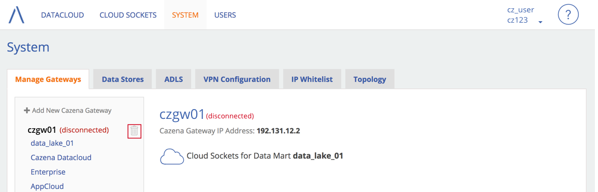
Users and Groups
When Cazena creates your Cazena datacloud, Cazena support will create a system administrator account. The administrator will receive a welcome email that contains the IP address of the datacloud, a username and instructions for creating a password.
Create User Accounts
Before You Start
If your site is using a port forwarding configuration, you must have a Cazena gateway running before you can create new user accounts. In addition, the Cazena console must be enabled on that gateway:
- Select System > Manage Gateways.
- On the left side of the screen, select Cazena Datacloud under any running gateway.
- On the right side of the screen, be sure that Cazena Console is active and that the status icon is green, indicating that the port is up .
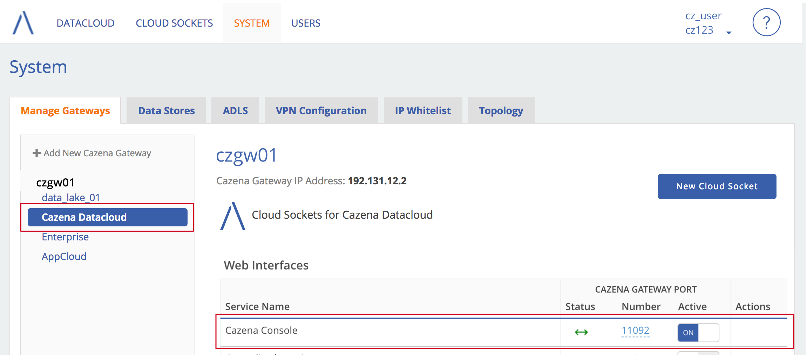
To add a new user:
- From the Users tab, click New User.
- Enter the username and email address for the user.
- Select a role for the user, and click Create.
The new user will be sent a welcome email with an initial password and instructions for connecting to the console.
User Roles
For every service that is created, Cazena support will designate an owner, or superuser. The privileges and permissions given to the superuser will depend on the type of data lake or data mart. Contact support@cazena.com for details.
Privileges for the different Cazena user roles are as follows:
| Feature | System Admin | Application Support | Data Analyst |
|---|---|---|---|
| Service Page | |||
| Transfers | |||
| Move Data | |||
| Modify Datasets | |||
| Add User | |||
| Delete User | |||
| Modify User | |||
| Dashboard Page | |||
| Workloads Page | |||
| System Page | |||
| Edit Cloud Sockets | |||
| View Cloud Sockets | |||
| Create/Edit Data Store | |||
| Delete Data Store | |||
| Access to Admin Tools Menu | |||
| Access to Log Server Console |
Using Groups to Control Access to Data
Cazena uses IPA authentication with Sentry for role-based authorization to data. You can create IPA groups in the Cazena console to help you manage access to data in a Cazena data lake. At a high level, the steps are as follows:
- First, create create_users and groups in the Cazena console.
- Next, import Cazena groups into Hue. By importing groups into Hue, you can ensure that groups and roles will persist across the entire data lake. Persistence cannot be assured with groups that are created directly in Hue.
- Use the Hue interface to manage data access for the imported groups.
This section will review the how to create groups in the Cazena console and then import them into Hue.
Create Groups
To create a group using the Cazena console:
- In the Users tab, select the Groups tab.
- Click New Group.
- Enter a name and short description for the group.
- Select members for the group. You may have to scroll in the list to see all users in your organization.
- Click Save.
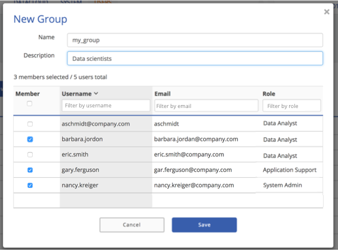
Import Groups into Hue
Sign into Hue
- Under Cloud Sockets, select Hue Server on the left side of the screen.
- The right side of the screen will show connection details for Hue. Click on the link under IP Address:Port.
- Sign into Hue using the same credentials that you use for the Cazena console.

After you have signed into Hue:
- Go to the Hue User Admin page. Consult the Hue documentation for more details.
Note: You must be a Hue superuser to access the User Admin page. If you cannot access the page, contact support@cazena.com.
- Select the Groups tab, then Add/Sync LDAP group.

- Type in the name of the groups you created in the Cazena console.
- Select Import new members.
- Click Add/Sync Group.

Note: If you add additional users to this group from the Cazena console, you will have to repeat this process for those users to be added to the Hue group.
Monitor Workloads and System Performance
The Cazena console provides tools for monitoring workloads, data movement progress, and system performance.
Service Status
- The Cloud Sockets tab shows the status of services (e.g., RStudio, Hue).
Data Movement Progress and Status of Workloads
- The Workloads tab displays information on individual jobs, which may include queries or data movements.
- Depending on the type of data movement, you may be able to view detailed information on the progress of data movements.
- You can stop or cancel data movements from the workloads tab.
Object Store
- Depending on the configuration of your environment, you can view information about your ADLS or AWS object store .
System Performance
- The front page of the Datacloud tab shows high level metrics for the past hour, as well as statuses for each data lake and data mart.
- Within each data lake or data mart, the Dashboard tab provides an overview of performance over a period of time.
Cloud Sockets
The Cloud Sockets tab shows the status (Good Health, Warning or Critical) of preconfigured services such as RStudio and Hue.
If you are connecting to a service via a Cazena Gateway, you can also look on the System > Manage Gateways tab to see the status of a Cazena gateway port for the service that you want.
Dashboard
-
From the Datacloud tab, click on the name of the data lake or data mart that you want to monitor.
Note that dashboard metrics are not available for Kafka clusters.
- Select the Dashboard tab.
- By default, the Dashboard tab shows charts for the past hour. You can select a different timeframe at the top of the screen.
Metrics for Data Lakes
For data lakes, the dashboard displays graphs for these metrics over the selected timeframe:
- CPU usage
- Disk usage over the selected timeframe
- Memory usage
- Network received
Metrics for Data Marts
For data marts, the dashboard displays graphs for these metrics over the selected timeframe:
- CPU usage
- Disk usage
- Read and write throughput
- This includes data going over the network to be imported to or exported from the cloud in a data movement operation as well as data being read from the cloud (For example: by BI tools for analytic reporting or by an enterprise FTP/SFTP export request.
- Network received and transmitted
- Read and write latency
- Read and write IOPS
- Number of database connections
- Health status (healthy or unhealthy)
- Maintenance mode (off or on)
Workload Status
Within each data lake or data mart, the Workloads tab provides details about the activity that has occurred within a given timeframe. By default, workloads for the past hour are displayed.
- You can select a different time frame in the upper right corner.
- Use the filter buttons at the top of the screen to filter the list by workload type (queries or data movements) or status (e.g., completed, failed, etc)
- Queries might include SQL DML, SQL DDL as well as non SQL workloads.
- Data Movements includes background operations involved in the movement of data at various phases, such as compression of data or selecting sample data
- Use the text search fields to view only the records that contain a particular text string.
- To sort the table, click on any column header.
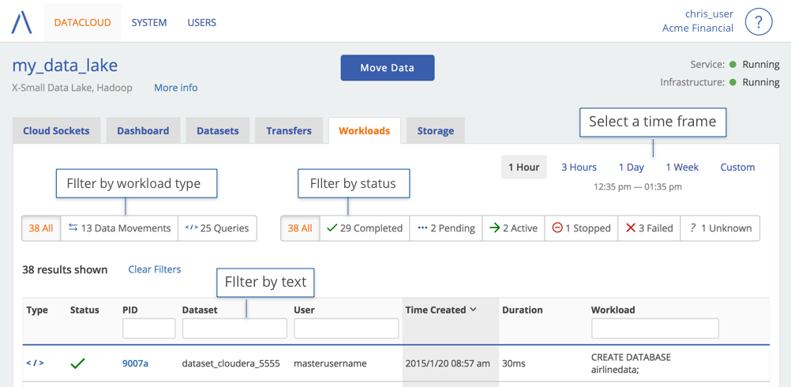
Data Movement Progress
Depending on the type of data movement, you may be able to view details on the progress of each table in a data movement.
In this example, the workload list is filtered to show only data movements that are currently running. To see details about a particular data movement, click on the link in the PID column.
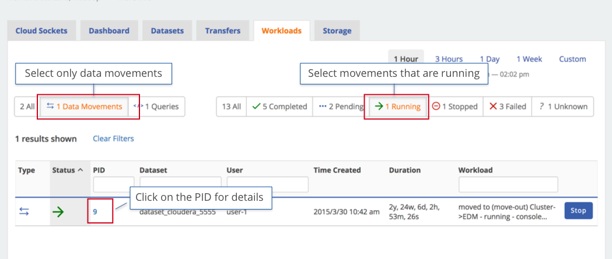
Details on a selected data movement will contain a list of tables that are to be moved. Each table shows a status (e.g., Running, Complete, Pending).
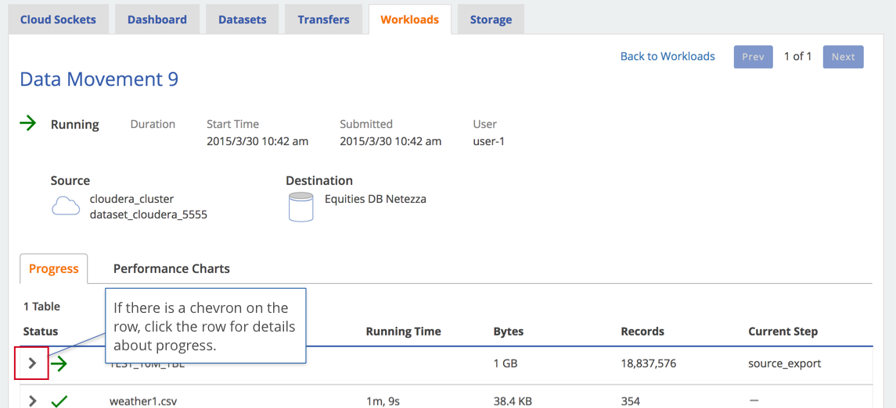
Depending on the type of data movement, you may be able to see details about the progress of individual tables. If there is a chevron on the left side of a row, click the row to open it for more details.
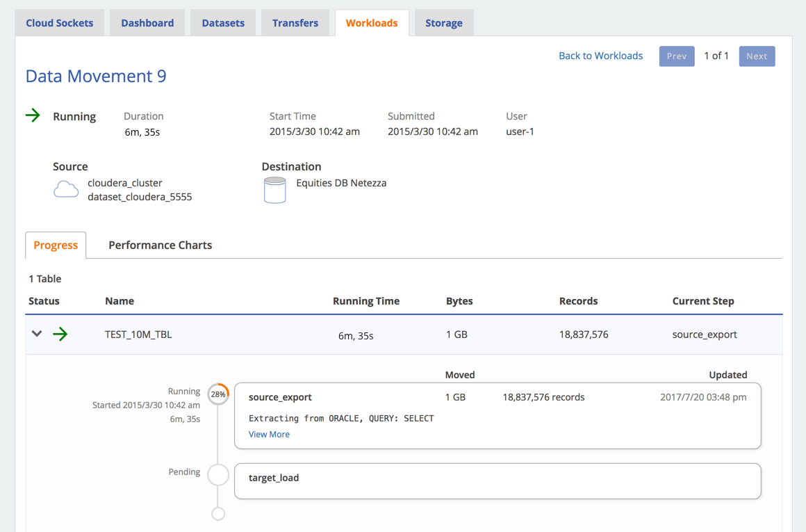
You can also see performance metrics from the data movement’s time of execution.
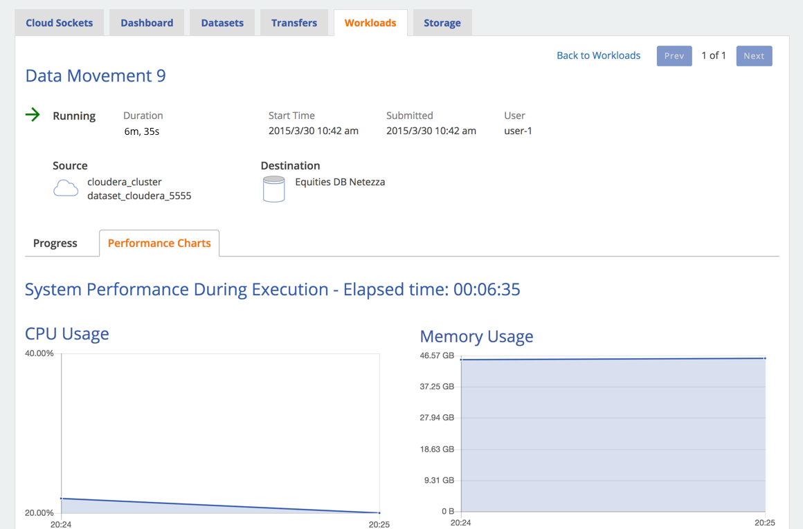
Cancel Jobs
To cancel any data movement job in progress:
- Use the filter buttons at the top of the screen to select only Active workloads.
- Click the Stop button, and then confirm the cancellation.
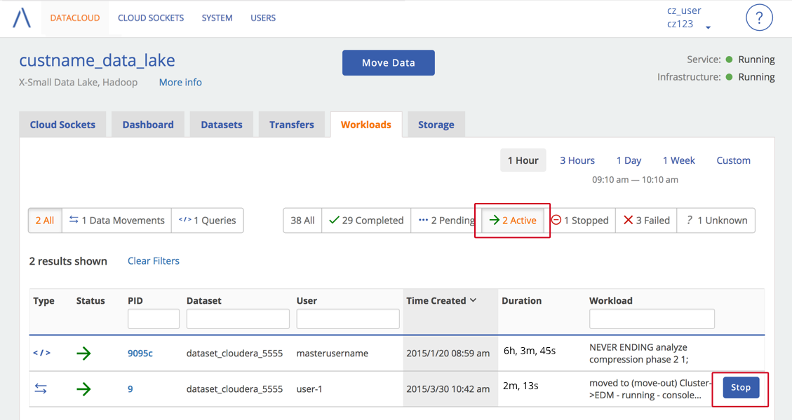
After the job has been stopped it will appear in the list with the stopped icon:
Note: Workloads that do not have a task ID are background tasks. Although they can affect performance, they cannot be cancelled. You will only see the Stop button for tasks that you are allowed to cancel.
Data Stores
Note: Users with System Administrator or Application Support privileges can create, edit or delete data stores.
Data stores contain the information that are used to connect to repositories of data that reside outside the Cazena datacloud.
- Data stores con connect to Netezza, Oracle, enterprise FTP/SFTP, and internet FTP/SFTP servers.
- For Netezza or Oracle, a data store can be viewed as being equivalent to a JDBC data source. It contains the connection information not only to the DBMS server, but also to the specific database, and optionally the schema within the database.
- Local File System is a preconfigured data store used for moving files from your local file system (e.g., your desktop or a remote drive).
This table shows which types of data stores can be used to import or export data from the datacloud.
| Connector | Import to the Cloud | Export from the Cloud |
|---|---|---|
| Oracle | ||
| Netezza | ||
| Enterprise FTP/SFTP | ||
| Internet FTP/SFTP | ||
| Custom Data Adapter | ||
| Local File System |
Note: Moving data between two Cazena services does not require a data store.
To create a data store:
- From the System tab, select Data Stores.
-
To create a data store, click New Data Store. (To edit an existing data store, click the pencil icon () on the right edge of the row.)

- Complete the form that appears. Refer to the sections below for more information about the type of data store that you are creating:
Oracle Data Store
| You can connect to either a database (SID) or a service. The user must have the following permissions: CREATE SESSION for the database instance SELECT on any tables are to be imported |
 |
Netezza Data Store
| The user must have the following permissions: LIST on the database SELECT on any tables that are to be imported CREATE EXTERNAL TABLE privilege |
 |
Enterprise FTP/SFTP Data Store
For Exporting Data
| Cazena Gateway: Select any gateway other than INTERNET Connector: Select either FTP or SFTP Path: Provide a path to a directory relative to the home directory, e.g., home/_my_username/banktest.The directory must exist and the user must have read/write access. Exported data will go into a directory that is named <dataset>/<YYYYMMDD_**T**HHMISS-MSEC/<table>/<datafile> Files are exported as they are stored on the system. This means that there may be multiple files exported for a single table. Exported files are in DSV file format. |
 |
For Importing Data
- Provide a complete string to the directory where the files are located.
- The user must have read access to the directory. Write access is not required.
Internet FTP/SFTP Data Store
| Cazena Gateway: Select INTERNET Connector: Select either FTP or SFTP Path: the directory path at the FTP host Host: the name or IP of the public FTP/SFTP site. Be sure to exclude "http://".Username: If the site supports public access, this might be anonymous. |
 |
Custom Data Store
| Cazena Gateway: Select the Cazena gateway that you want to use Connector: select Custom Data Adapter Program: the path to your program file on the Cazena gateway. Arguments: Argument to be passed to your program Note: All text in the Arguments field will be wrapped in double-quotes when used by Cazena. Don’t put double-quotes in this field unless your program needs them around your argument string. |
 |
Details for Oracle, Netezza and DSV
This section reviews the details of each type of data movement for various types of source data: Oracle, Netezza and Delimiter Separated Values (DSV) files. For each source type, we review:
- Support for object and data types
- File structure for DSV (DSV only)
- Constraints for movement into MPP SQL
- Table and column names
If you move data into the cloud using the Cazena Console, you will have the opportunity to review datatypes, table and column names, and constraints for each table that you move. See the section on moving data from the console for more details.
There is a limit of 1 table move at a time per data store. You may start multiple table moves on a single data store, but they will be queued up and performed serially.
Oracle
Objects
You may move Oracle tables into your Cazena datacloud. Other Oracle object types are not supported.
Datatypes
The following Oracle datatypes are supported. Some datatypes are supported with qualifications for various target service types. These qualifications are described below.
Numeric
| Datatype | Hive Metastore | MPP SQL (Redshift) |
|---|---|---|
| number(p,s) | Possible loss in precision | Possible loss in precision |
| float(p) | Possible loss in precision | Possible loss in precision |
| binary_float | ||
| binary_double |
Character
| Datatype | Hive Metastore | MPP SQL (Redshift) |
|---|---|---|
| char(n) | Converts to varchar for large values of n | Converts to varchar for large values of n |
| varchar2(n) | Possible truncation for large values of n | Possible truncation for large values of n |
| nvarchar(n) | Possible truncation for large values of n | Possible truncation for large values of n |
| nchar(n) | Converts to varchar for large values of n | Converts to varchar for large values of n |
| nvarchar2(n) | Possible truncation for large values of n | Possible truncation for large values of n |
Temporal
| Datatype | Hive Metastore | MPP SQL (Redshift) |
|---|---|---|
| date | Not supported as a temporal datatype; converts to varchar. | |
| timestamp | Possible data loss | |
| timestamp with time zone | Not supported as a temporal datatype; defaults to varchar | Not supported as a temporal datatype; defaults to varchar |
| timestamp with local time zone | Not supported as a temporal datatype; defaults to varchar | Not supported as a temporal datatype; defaults to varchar |
| interval year to month | Not supported as a temporal datatype; defaults to varchar | Not supported as a temporal datatype; defaults to varchar |
| interval day to second | Not supported as a temporal datatype; defaults to varchar | Not supported as a temporal datatype; defaults to varchar |
Other
| Datatype | Hive Metastore | MPP SQL (Redshift) |
|---|---|---|
| rowid | Does not support intended meaning, defaults to varchar | Does not support intended meaning, defaults to varchar |
| urowid | Does not support intended meaning, defaults to varchar | Does not support intended meaning, defaults to varchar |
| mlslabel | Does not support intended meaning, defaults to varchar | Does not support intended meaning, defaults to varchar |
Constraint Support
The following types of Oracle construct clauses are supported by your Cazena datacloud:
- Primary key
- Foreign key
- Unique key
- Not null (column attribute)
Table and Column Names
When moving data, the source and target services may have different rules for valid table and column names. As a result, table or column names may be changed in any of the following ways:
- The name may be truncated, quoted or changed to make it unique.
- Invalid/unsupported characters may be substituted. For example, Amazon Redshift requires ASCII only characters.
- Reserved words may be removed from names.
If you move data using the Cazena console, these changes will be displayed during the review process. At that time, you can override the choices.
Data Store
See Creating an Oracle data store for information on creating a data store that is able to access the data on the server.
##Netezza {#netezza_details}
Objects
You may move Netezza tables and external tables into your Cazena datacloud. Other Netezza object types are not supported.
Datatypes
Cazena supports the following Netezza datatypes. Some datatypes are supported with qualifications for various target service types. These qualifications are described below.
Numeric
| Datatype | Hive Metastore | MPP SQL (Redshift) |
|---|---|---|
| byteint (alias int1) | ||
| smallint (alias int2) | ||
| integer (alias int or int4) | ||
| bigint (alias int8) | ||
| numeric (p, s) | ||
| numeric(p) | ||
| numeric | ||
| decimal (alias for numeric) | ||
| float(p) | ||
| real (same as float(6)) | ||
| double precision (same as float(15)) |
Character
| Datatype | Hive Metastore | MPP SQL (Redshift) |
|---|---|---|
| char (n) | Converts to varchar for large values of n | Converts to varchar for large values of n |
| varchar(n) | Possible truncation for large values of n | Possible truncation for large values of n |
| nchar(n) | Converts to nvarchar for large values of n | Converts to nvarchar for large values of n |
| nvarchar(n) | Possible truncation for large values of n | Possible truncation for large values of n |
Temporal
| Datatype | Hive Metastore | MPP SQL (Redshift) |
|---|---|---|
| date | Not supported as a temporal datatype in Cloudera Hadoop, converts to varchar. | |
| time | Not supported as a temporal datatype; converts to varchar | Not supported as a temporal datatype; converts to varchar |
| time with time zone (alias timetz) | Not supported as a temporal datatype; converts to varchar | Not supported as a temporal datatype; converts to varchar |
| timestamp | Possible data loss | |
| timestamp with time zone | Not supported as a temporal datatype; converts to varchar | Not supported as a temporal datatype; converts to varchar |
| interval | Not supported as a temporal datatype; converts to varchar | Not supported as a temporal datatype; converts to varchar |
Other
| Datatype | Hive Metastore | MPP SQL (Redshift) |
|---|---|---|
| boolean |
Constraint Support
The following types of Netezza construct clauses may be moved into your Cazena datacloud:
- Primary key
- Foreign key
- Unique key
- distkey
- diststyle (e.g., HASH, RANDOM)
- not null (column attribute)
Although Netezza does not enforce keys, some Netezza tables may still include them for SQL compatibility. Note that when a Netezza table is imported to a service type that supports keys (e.g., MPP SQL), these constructs will be used in the creation of the target table if they are encountered.
Table and Column Names
When moving data, the source and target services may have different rules for valid table and column names. As a result, table or column names may be changed in any of the following ways:
- The name may be truncated, quoted or changed to make it unique.
- Invalid/unsupported characters may be substituted. For example, Amazon Redshift requires ASCII only characters.
- Reserved words may be removed from names.
If you move data using the Cazena console, these changes will be displayed during the review process. At that time, you can override the choices.
Data Store
See Creating a Netezza data store for information on creating a data store that is able to access the data on the server.
Delimiter Separated Values (DSV) Files
File format
Delimiter Separated Values (DSV) files may be moved into the cloud from any type of source. They are most commonly moved from either the local file system or FTP/SFTP servers.
This section describes how DSV files must be constructed so that they can be successfully loaded into your Cazena datacloud.
Lines
- Lines are delimited using LF (default) or CRLF
- Each row of the file must have exactly the same number of fields.
- Blank lines are invalid.
- The end of file is determined by either the termination of the last line (EOL/EOF character sequence) or at the beginning of a blank line at the end of the file.
This screenshot illustrates the default options for reading DSV files. These values can be changed when moving data using the Cazena Console.

Column Delimiter
By default, a comma is used as a column delimiter. The delimiter can be any printable ASCII character or tab character. Other non-printing or UTF-8 characters are not supported.
Header Row
- The file can optionally have one header row that contains column names.
- The rules for reading the header row are the same as for any row, using the same quoting, field delimiting, line delimiting and escaping.
Escape Character
- A backslash (\) can be used as an escape key.
- Example:
\n\t\f \075results inntf 075
- Example:
- The backslash can escape itself. Doubling the backslash will include the escape character in the resulting field.
- Example: A double backslash in
abc\\defresults inabc\def
- Example: A double backslash in
- Backslashes cannot escape control characters or be used to include unicode, hexadecimal, or octal characters.
Text Quoting
Text delimiters can be used to include either line delimiters or column delimiters within a string. If you choose the option to use a text delimiter, then any string whose first non-space character is a quote will be interpreted as a quoted string. Nonquoted strings will be parsed verbatim.
- You can use either single quotes (‘) or double quotes (“) as a text delimiter.
- Backslashes can escape the line delimiter, the field delimiter, or any text quote character.
- Example: Including a newline (LF) in quotes in
"abc[LF]def"results inabc[LF]def. LF is not treated as a line delimiter. - Example: Including a comma in quotes in
"abc,def"results inabc,def. The comma is not treated as a field delimiter.
- Example: Including a newline (LF) in quotes in
- If you have selected the option to use backslash as an escape character, then backslashes will be applied within quoted strings. To include a backslash in the resulting field, use a double backslash.
- Example: Escaping the quote in
"abc\"\"def"results inabc""def
- Example: Escaping the quote in
- To include the text delimiter character within a string, double the character.
- Example: Using double quotes in
"abc""""def"results inabc""def
- Example: Using double quotes in
- In general, leading and trailing spaces are ignored between the field delimiters. If leading and trailing spaces are significant, then text quoting needs to be used.
- Example: Quoting spaces in
"trailingSpaces "results intrailingSpaces.
- Example: Quoting spaces in
Datatypes
In addition to strings as described in the previous sections, the following datatypes are recognized in DSV files.
| Datatype | Format | Example |
|---|---|---|
| date | YYYY-MM-DD | 5/17/15 |
| time | HH:MI:SS | 25:51.2 |
| timestamp | YYYY-MM-DD HH:MI:SS | 25:51.2 |
| time with time zone | HH:MI:SSTZ | 14:25:51.246-06:00 |
| timestamp with time zone | YYYY-MM-DD HH:MI:SSTZ | 2015-05-17 14:25:51.246-06:00 |
| Integer | +1 -231 15 | |
| Decimal / Floating point | <sign><digits>.<digits> Sign is optional Fractional component is optional Is a leading 0 required? |
-123.45 2 3.00000 |
| Null | \N | When \N is the only character in a field, it indicates the null value. Null-ness may not be preserved in all workload engines. |
Table and Column Names
When moving data, the source and target services may have different rules for valid table and column names. As a result, table or column names may be changed in any of the following ways:
- The name may be truncated, quoted or changed to make it unique.
- Invalid/unsupported characters may be substituted. For example, Amazon Redshift requires ASCII only characters.
- Reserved words may be removed from names.
If you move data using the Cazena console, these changes will be displayed during the review process. At that time, you can override the choices.
Data Store
See Creating an Enterprise FTP/SFTP data store or Creating an Internet FTP/SFTP data store for information on creating data stores that are able to access the data on the server.
Support
To contact Cazena support:
Phone:
US +1 (844) 781-2986
UK +44 808 164 1104
Web: https://support.cazena.com
Email: support@cazena.com